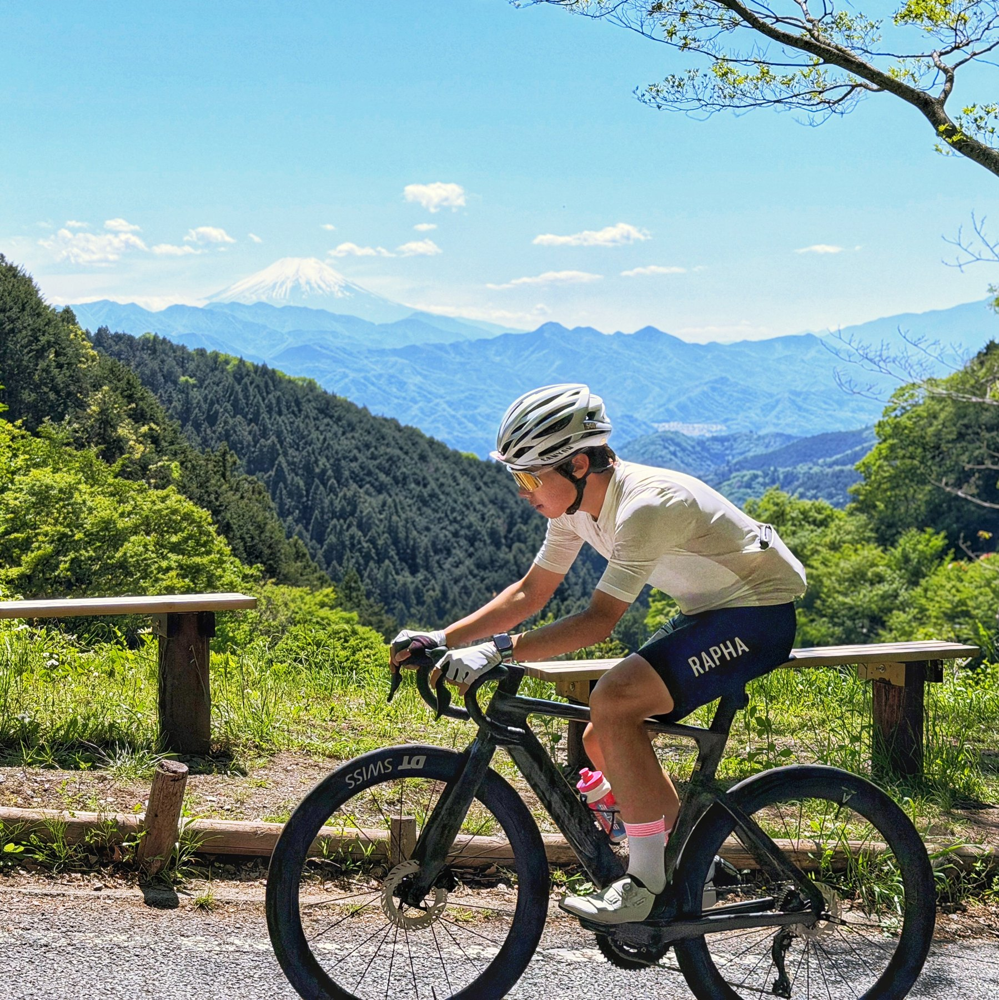
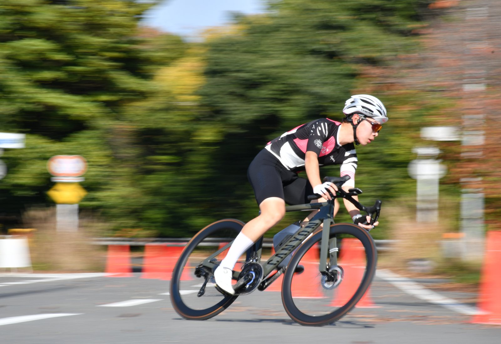
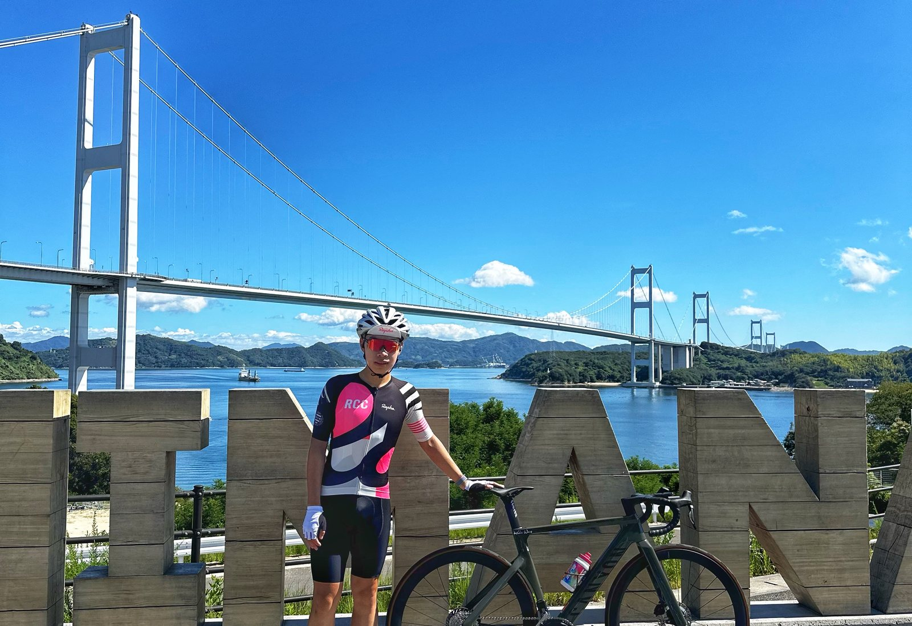
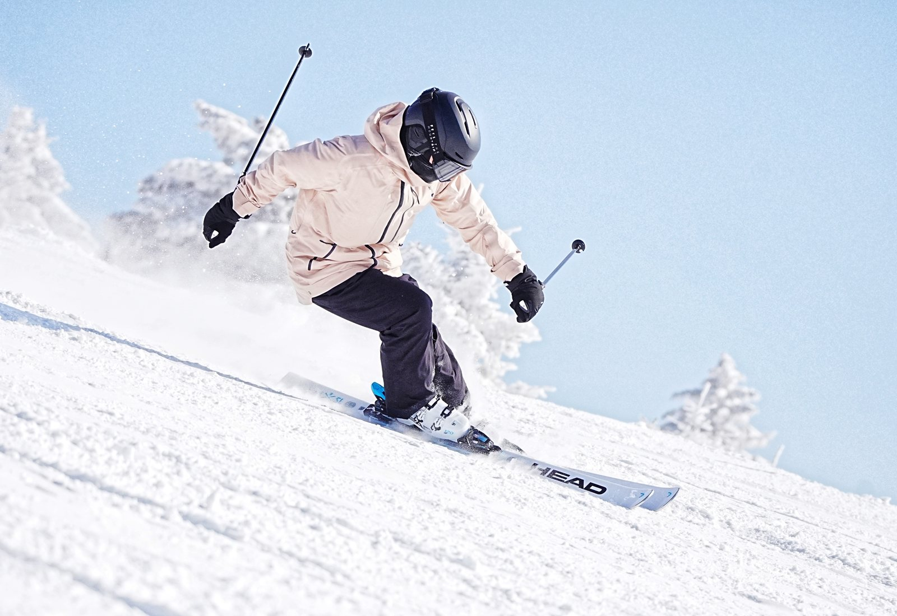
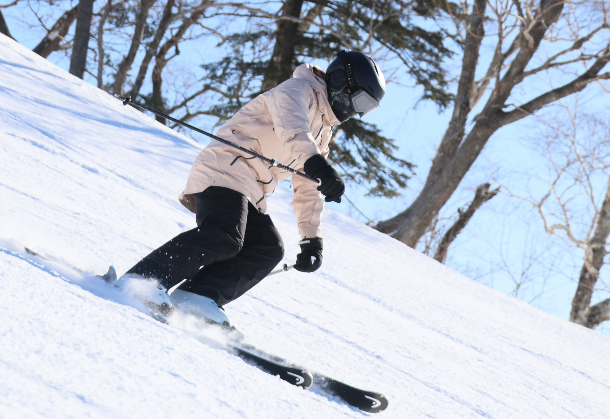
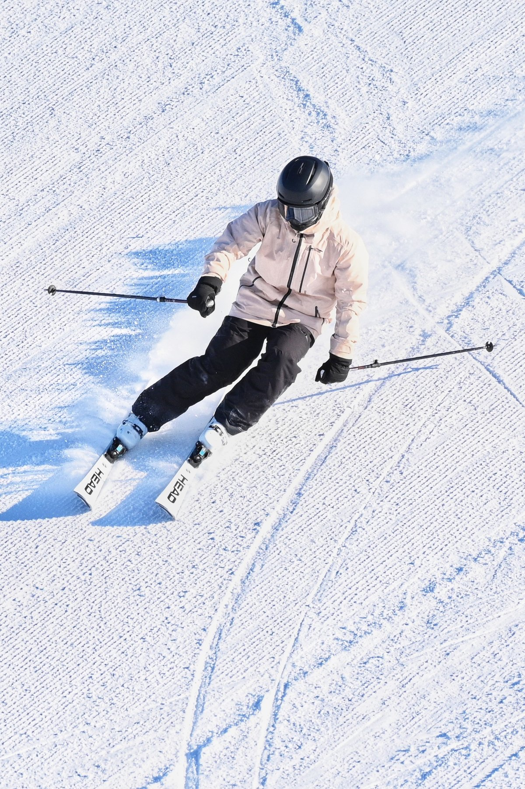
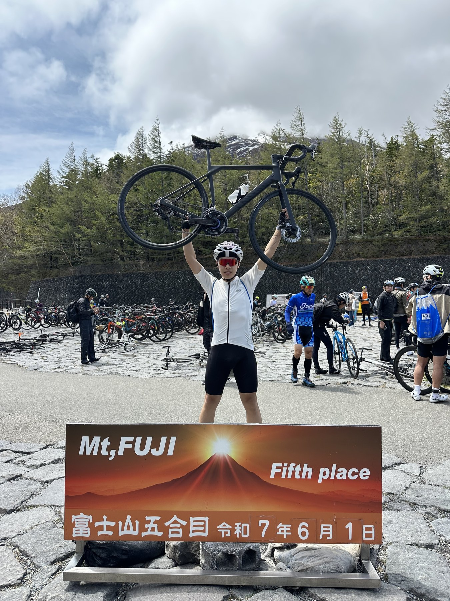
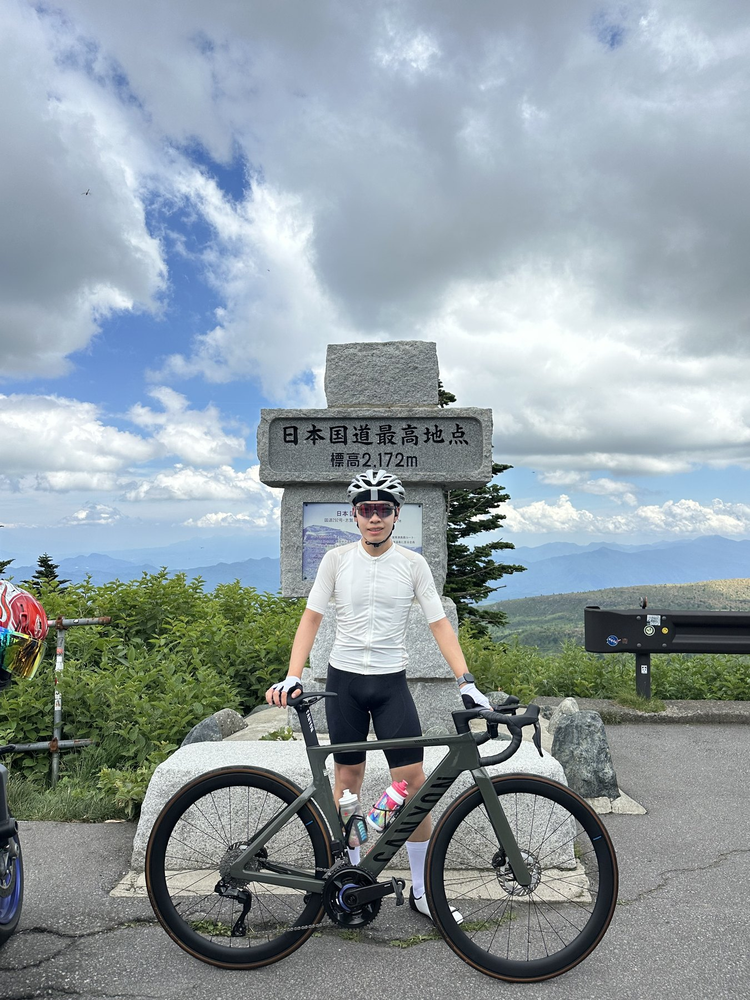

Photo Exhibition
Photo exhibition
A visual archive for engineering details, campus life, travel, cycling, and skiing.








Photo Exhibition
A visual archive for engineering details, campus life, travel, cycling, and skiing.







